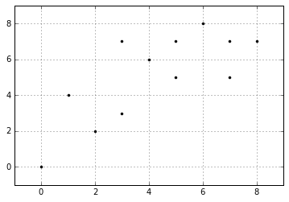

K-Means 聚类
目录
之前几篇文章我详细讲了一下分类和回归的问题，它们都是通过对带有标签的数据进行训练，然后得到一个模型，再通过模型对数据输入的信息进行预测。今天我们来讲一下聚类算法。
聚类算法有很多种，比如K-Means，AP聚类，层次聚类(Hierarchical clustering)等等，我接触最多的就是K-Means，去年在公司还用mahout开发过K-Means算法，但是一次次的MR，效率确实不太高。现在mahout内部机制也换成spark了，效率应该提升了不少。今天我们依然先从K-Means开始，它很简单，之后我会在记录其它一些聚类算法的应用。
K-Means简介 #
K-Means之所以很受欢迎，就是其速度很快并且有很好的可扩展性。K-Means算法是一个重复移动类中心点的过程，把类的中心点，也称重心（centroids），移动到其包含成员的平均位置，然后重新划分其内部成员。它的应用场景很广泛，比如一个鞋厂有三种新款式，它想知道每种新款式都有哪些潜在客户，于是它调研客户，然后从数据里找出三类。在后面我会通过程序实现一些场景。
K-Means的参数是类的重心位置和其内部观测值的位置。与广义线性模型和决策树类似，K-Means参数的最优解也是以成本函数最小化为目标。K-Means成本函数公式如下：$$J=\sum_{k=1}^{K}\sum_{i\epsilon C_k}\lVert x_i-\mu _k\rVert^2$$ 公式中$\mu _k$表示第$k$个重心的位置。成本函数是各个类畸变程度之和。每个类的畸变程度等于该类重心与其内部成员位置距离的平方和。也就是说内部成员越紧凑那么类的畸变程度就越小，反之则反之。求解成本函数最小化的参数就是一个重复配置每个类包含的观测值，并不断移动类重心的过程。每次迭代的时候，K-Means会把观测值分配到离它们最近的类，然后把重心移动到该类全部成员位置的平均值那里。
假如我现在有以下样本，每个样本有两个特征。在图像上表示出来是这么个样子：
%matplotlib inline
import matplotlib.pyplot as plt
import numpy as np
X0 = np.array([7, 5, 7, 3, 4, 1, 0, 2, 8, 6, 5, 3])
X1 = np.array([5, 7, 7, 3, 6, 4, 0, 2, 7, 8, 5, 7])
plt.figure()
plt.axis([-1, 9, -1, 9])
plt.grid(True)
plt.plot(X0, X1, 'k.')
[<matplotlib.lines.Line2D at 0x64570d0>]

假如在K-Means初始化的时候，将第一个类的重心放在了第5个样本，第二个类的重心放在了第11个样本上，那么我们可以将每个实例与两个重心的距离全部算出来，将其分配到最近的类里面，计算的的结果如下：
import pandas as pd
vec = np.vstack((X0,X1)).T
dist_c1 = []
dist_c2 = []
for i in range(len(vec)):
dist_c1.append(np.linalg.norm(vec[i]-vec[4]))
dist_c2.append(np.linalg.norm(vec[i]-vec[10]))
distance = pd.DataFrame(np.vstack((dist_c1,dist_c2)).T,columns=['C1','C2'])
distance
| C1 | C2 | |
|---|---|---|
| 0 | 3.162278 | 2.000000 |
| 1 | 1.414214 | 2.000000 |
| 2 | 3.162278 | 2.828427 |
| 3 | 3.162278 | 2.828427 |
| 4 | 0.000000 | 1.414214 |
| 5 | 3.605551 | 4.123106 |
| 6 | 7.211103 | 7.071068 |
| 7 | 4.472136 | 4.242641 |
| 8 | 4.123106 | 3.605551 |
| 9 | 2.828427 | 3.162278 |
| 10 | 1.414214 | 0.000000 |
| 11 | 1.414214 | 2.828427 |
从上表我们可以通过距离的大小来给点进行分类，用matplotlib在图像上表示出来第一次聚类的效果如下：
C1 = [1, 4, 5, 9, 11]
C2 = list(set(range(12)) - set(C1))
X0C1, X1C1 = X0[C1], X1[C1]
X0C2, X1C2 = X0[C2], X1[C2]
plt.figure()
plt.title("Cluters Assignments after iteration 1")
plt.axis([-1, 9, -1, 9])
plt.grid(True)
plt.plot(X0C1, X1C1, 'rx')
plt.plot(X0C2, X1C2, 'g.')
plt.plot(4,6,'rx',ms=12.0)
plt.plot(5,5,'g.',ms=12.0)
plt.show()

现在我们开始第二次选择重心点。上面讲过，在选择重心时，会把观测值分配到离它们最近的类，然后把重心移动到该类全部成员位置的平均值那里。那通过计算，在类1中，平均坐标值为[3.8,6.4],类2的平均坐标值为[4.571429,4.142857]。那么根据这个新的重心点，我们再次计算一下距离。
dist_c1_2 = []
dist_c2_2 = []
for i in range(len(vec)):
dist_c1_2.append(np.linalg.norm(vec[i]-np.array([3.8,6.4])))
dist_c2_2.append(np.linalg.norm(vec[i]-np.array([4.571429,4.142857])))
distance_2 = pd.DataFrame(np.vstack((dist_c1_2,dist_c2_2)).T,columns=['C1','C2'])
distance_2
| C1 | C2 | |
|---|---|---|
| 0 | 3.492850 | 2.575393 |
| 1 | 1.341641 | 2.889107 |
| 2 | 3.255764 | 3.749830 |
| 3 | 3.492850 | 1.943067 |
| 4 | 0.447214 | 1.943067 |
| 5 | 3.687818 | 3.574285 |
| 6 | 7.443118 | 6.169378 |
| 7 | 4.753946 | 3.347250 |
| 8 | 4.242641 | 4.463000 |
| 9 | 2.720294 | 4.113194 |
| 10 | 1.843909 | 0.958315 |
| 11 | 1.000000 | 3.260775 |
我们再次根据距离的大小对其进行分类，会得到一下的结果：
C1 = [1, 2, 4, 8, 9, 11]
C2 = list(set(range(12)) - set(C1))
X0C1, X1C1 = X0[C1], X1[C1]
X0C2, X1C2 = X0[C2], X1[C2]
plt.figure()
plt.title("Cluters Assignments after iteration 2")
plt.axis([-1, 9, -1, 9])
plt.grid(True)
plt.plot(X0C1, X1C1, 'rx')
plt.plot(X0C2, X1C2, 'g.')
plt.plot(3.8,6.4,'rx',ms=12.0)
plt.plot(4.57,4.14,'g.',ms=12.0)
plt.show()

ok,我们重复上面的操作，直到畸变程度收敛，或者小于我们所设定的阈值，那么程序将停止。来看看聚类之后的结果。
C1 = [0, 1, 2, 4, 8, 9, 10, 11]
C2 = list(set(range(12)) - set(C1))
X0C1, X1C1 = X0[C1], X1[C1]
X0C2, X1C2 = X0[C2], X1[C2]
plt.figure()
plt.title("last time")
plt.axis([-1, 9, -1, 9])
plt.grid(True)
plt.plot(X0C1, X1C1, 'rx')
plt.plot(X0C2, X1C2, 'g.')
plt.plot(5.5,7.0,'rx',ms=12.0)
plt.plot(2.2,2.8,'g.',ms=12.0)
plt.show()

结束程序就代表着已经找到了最优解，但是有个问题就是，这个最优解不一定是全局最优解，有可能是局部最优解。这个概念应该不用过多解释，说白了一句话：假如两个类别差别很大，那么当你运气不好时，第一次选取重心点全部落在了一起，那么最终的结果可能是两个重心点很近很近，导致分类结果并非是真正的分类。为了解决这个问题，可以让程序运行很多遍，如果每次结果都是那么一种，那么分类很可能很可能就是对的。后面的文章在详说其他一些解决办法。
对与一些不确定类别个数的问题，我们有一种很好的办法来处理，肘部法则(The elbow method)。
肘部法则 #
肘部法是通过计算出不同K值的成本函数。当随着K值越来越大，平均畸变程度会变小。在K值慢慢接近变量值个数的过程中，平均畸变程度的改善效果也会不断递减，所以我们选择在平均畸变程度改变最大的点作为肘部，那个点，也是最合适的K值。
来看一个简单的例子。
cluster1 = np.random.uniform(0.5, 1.5, (2, 10))
cluster2 = np.random.uniform(3.5, 4.5, (2, 10))
X = np.hstack((cluster1, cluster2)).T
plt.figure()
plt.axis([0, 5, 0, 5])
plt.grid(True)
plt.plot(X[:,0],X[:,1],'k.')
plt.show()

很明显，上面的点一共分成了两类，那么我们选取K值为1到10，看看平均畸变程度的变化。
from sklearn.cluster import KMeans
from scipy.spatial.distance import cdist
K = range(1,10)
meandistances = []
for k in K:
kmeans = KMeans(n_clusters=k)
kmeans.fit(X)
meandistances.append(sum(np.min(cdist(X,kmeans.cluster_centers_, 'euclidean'), axis=1)) / X.shape[0])
plt.plot(K,meandistances,'bx-')
plt.xlabel('k')
plt.ylabel('Average distortion')
plt.title('Selecting k with the Elbow Method')
plt.show()

效果很明显，K值由1变为2时，平均畸变程度显著下降，再往后平均畸变程度的变化就不是太明显了。
评估聚类效果 #
和前面的文章一样，每当算法写出来之后，我们都需要对其进行评估，看看算法运行的是否满意。那么在K-Means中也存在一些评估指标，上面所说的平均畸变程度算是一种，那么接下来要介绍的叫做轮廓系数(silhouette coefficient)。轮廓系数结合了聚类的凝聚度(Cohesion)和分离度(Separation)，用于评估聚类的效果。该值处于-1~1之间，值越大，表示聚类效果越好。具体计算方法如下：
- 对于第$i$个元素$x_i$，计算$x_i$与其同一个簇内的所有其他元素距离的平均值，记作$a_i$，用于量化簇内的凝聚度。
- 选取$x_i$外的一个簇$b$，计算$x_i$与$b$中所有点的平均距离，遍历所有其他簇，找到最近的这个平均距离,记作$b_i$，用于量化簇之间分离度。
- 对于元素$x_i$，轮廓系数$s_i = (b_i – a_i)/max(a_i,b_i)$
- 计算所有x的轮廓系数，求出平均值即为当前聚类的整体轮廓系数
从上面的公式，不难发现若$s_i$小于$0$，说明$x_i$与其簇内元素的平均距离小于最近的其他簇，表示聚类效果不好。如果$a_i$趋于$0$，或者$b_i$足够大，那么$s_i$趋近与$1$，说明聚类效果比较好。下面的例子运行四次K-Means，从一个数据集中分别创建2，3，4，8个类，然后分别计算它们的轮廓系数。在scikit-learn中用sklearn.metrics.silhouette_score()函数来计算轮廓系数。
from sklearn import metrics
plt.figure(figsize=(8, 10))
plt.subplot(3, 2, 1)
x1 = np.array([1, 2, 3, 1, 5, 6, 5, 5, 6, 7, 8, 9, 7, 9])
x2 = np.array([1, 3, 2, 2, 8, 6, 7, 6, 7, 1, 2, 1, 1, 3])
X = np.array(list(zip(x1, x2))).reshape(len(x1), 2)
plt.xlim([0, 10])
plt.ylim([0, 10])
plt.title('Instances')
plt.scatter(x1, x2)
colors = ['b', 'g', 'r', 'c', 'm', 'y', 'k', 'b']
markers = ['o', 's', 'D', 'v', '^', 'p', '*', '+']
tests = [2, 3, 4, 5, 8]
subplot_counter = 1
for t in tests:
subplot_counter += 1
plt.subplot(3, 2, subplot_counter)
kmeans_model = KMeans(n_clusters=t).fit(X)
for i, l in enumerate(kmeans_model.labels_):
plt.plot(x1[i], x2[i], color=colors[l], marker=markers[l],ls='None')
plt.xlim([0, 10])
plt.ylim([0, 10])
plt.title('K = %s, silhouette coefficient = %.03f' % (t, metrics.silhouette_score(X, kmeans_model.labels_,metric='euclidean')))
plt.show()

从图中很明显可以看出数据一共有3类，并且在K值为3的时候，轮廓系数是最大的。
总结 #
到此，我们我们详细了解了K-Means算法的应用，并且学习了如何评估聚类效果。这看起来很简单，但是这只是小小的一部分内容，K-Means还可以做很多事情，比如对根据股票每天跌涨情况，对股票的种类进行分类，再或者你可以将一些不带标签的数据进行聚类，获得一些标签，然后再建立一个监督学习方法用来分类。在后面我还会写一些其它的分类，以及其它的一些聚类方法。
如果有朋友喜欢我的文章，欢迎加我微信或者发邮件给我。让我们共同探索未来，在数据中遨游吧~~